Green Stimulus Setup Guide
The Green Stimulus WordPress Theme
Brought to you by Salesforce CRM | Developed by Lively Labs
Table of Contents
- 1.0 Activate the Theme
- 2.0 Setting the Theme Options
- 3.0 Advanced Customization & Support
- 4.0 Theme Contents
1.0 Activate the Theme [ top ]
To activate the Green Stimulus theme, place the folder named Green-Stimulus inside your wp-content/themes folder. Next, in your admin panel, choose Appearance, and inside the Appearance expanded menu, choose Themes.
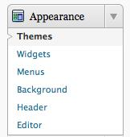
[fig. 1.1 Appearance > Themes]
You will be taken to the Manage Themes page. Next, locate Green Stimulus and click on Activate.
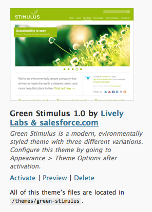
[fig. 1.2 Screen: activation screen]
Now that your theme is activated, you will see two new additions to your dashboard menu: Stimulus Slider will appear in the top block of your menu, while Stimulus Theme will appear under Appearance:
.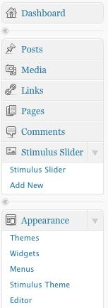
[fig. 1.3 options]
Here are the main sections of the Green Stimulus theme:
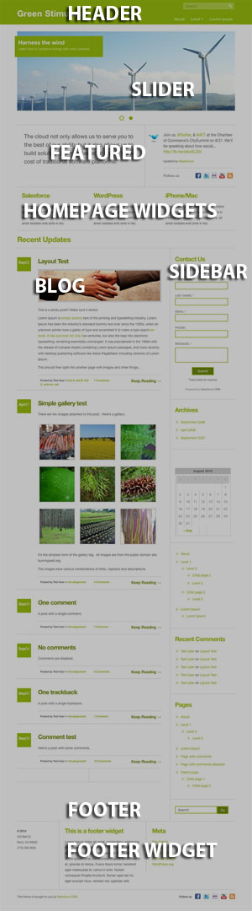
2.0 Setting the Theme Options [ top ]
Under Appearance, click on Stimulus Theme in order to access the theme's options. You will then be taken to the Stimulus Theme Options page. Here you will find all of the options for customizing the Stimulus theme.
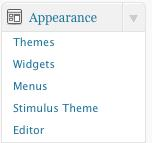
[fig. 2.0 Setting Options]
The Theme Options Page:
This is what the page will look like:
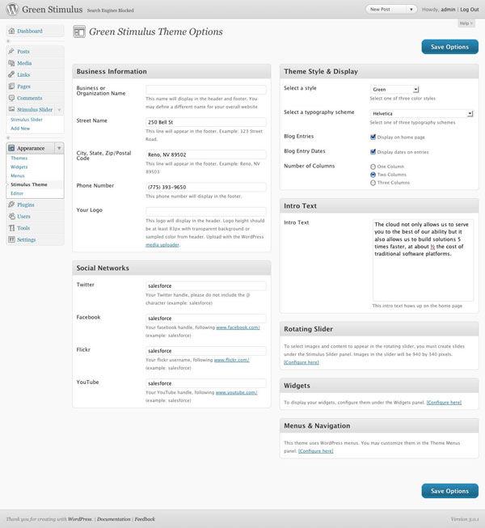
[fig. 2.0.1 Theme Options Page]
Saving Your Changes:
Remember, to make your changes take effect, you must click on the "Save Options" button in the top and bottom right corners of the Theme Options page. If you navigate away for the Theme Options page without saving your changes, you will lose them.
[fig 2.0.2 Save Options Button]
2.1 Business Information [ top ]
The Business Information section is where you set the name, location and logo for your business. These items show up in the header and the footer of the theme. The options look like this:
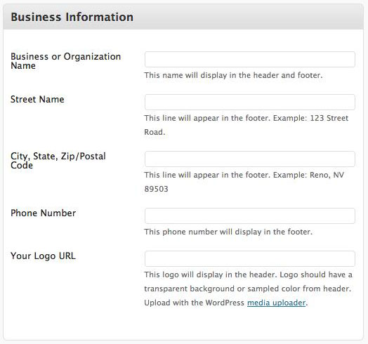
[fig. 2.1 Business Information]
Business Name:
Once you fill this out, your business name will show up in the header (unless you also designate a logo in "Your Logo URL" below).
[fig. 2.0.2 Business Name in Header]
Street, City/State/Zip, Phone Number:
These settings will fill in your physical address in the footer of the theme.
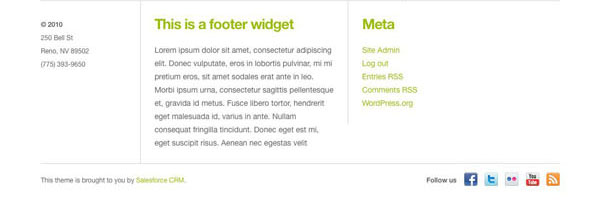
[fig. 2.1.3 Physical Address in Footer]
Your Logo URL:
If you have an image that you would like to use as your logo, you can upload it using the media uploader and place the URL in this box.
- Ensure that the image you use has a transparent background
- If you use the media uploader link, remember that it will open in a new tag or window
- After you have uploaded the image, copy the URL of the image in the media uploader window:
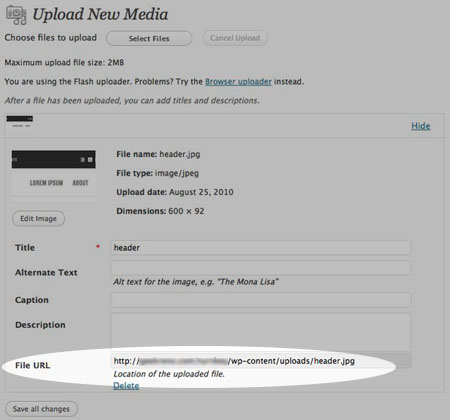
- Place that URL in the Green Stimulus Theme Options page under Your Logo URL
2.2 Theme Style and Display [ top ]
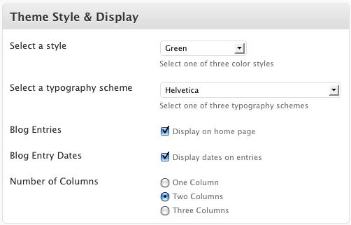
[fig. 2.2 Theme Style and Display]
Select a style:
There are three different styles to choose from: Green, Brown and Green and Teal. Each has its own set of colors and images. This will change the entire look of the site.
Select a font style:
There are also four different font styles: Helvetica, Yanonne Kaffeesatz and Trebuchet, Museu Slab and Lucida Grande or Verdana, and Chunk Five and Georgia. Each of these font configurations is different, and you can mix and match them with the different styles above to create a totally unique look to your preference. Each of the fonts is loaded in the theme, so it doesn't matter if visitors have those fonts installed in their computers or not- they will display as listed.
Blog Entries:
If you want to have blog entries displayed on the home page, you can click this box. Some users choose not to have their blog entries show up on their home page, opting for a smaller screen size with less scrolling on the home page. Others want the blog. It's your choice.
Blog Entry Dates:
Some users may not want to display the date on the blog entries because they do not update them very often, or they just choose not to have them. Check the box to display the date on your entries. Uncheck it to remove the date.
Number of Columns:
You may have one, two or three columns for your blog and sidebar on the home page. Remember, if you choose one column, your sidebars display underneath your blog, and if you choose two columns, your sidebars are stacked upon each other.
2.3 Social Networks [ top ]
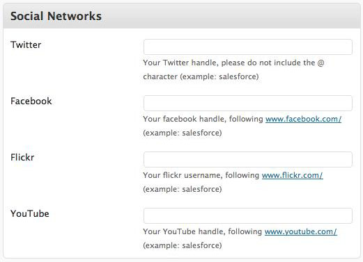
[fig. 2.3 Social Networks]
Enter your social media profile names if you would like to have these social media links to show up in your header and footer.
2.4 Featured Text [ top ]
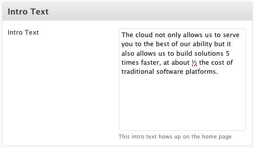
[fig. 2.4 Intro Text]
To fill in the area underneath the slider, enter information into the following areas of Intro Text:
Intro Text is the paragraph you wish to display directly below the slider section
2.5 Rotating Slider [ top ]
The rotating slider is the first section of the theme directly below the header. In this section you can display images, text and even video. To configure this you can click on Configure Here under Rotating Slider in your Theme Options page:
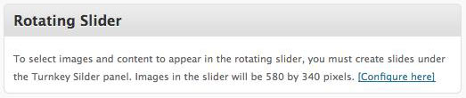
[fig. 2.5 Rotating Slider]
or you can click on Add New under the Stimulus Slider section in your dashboard.

When you click on Add New, you are taken to the Stimulus Slider Add New Post page, where you can enter the Title, Body, the text that will appear on a button if you choose to have one, and the URL you want that link to lead to. In addition (not shown), to upload your image to the slider, you use the Featured Image option in the right hand column of the New Post page. Once uploaded, choose Use as Featured Image and your image will be set for that slider post.

Each of these settings corresponds to elements in the slider.
For each slider post that you enter, each of them will rotate automatically for the user. If you only upload one slider post, it will remain static. To manage your slider posts, go to Stimulus Slider under the Stimulus Slider dashboard menu item.
2.6 Widgets [ top ]
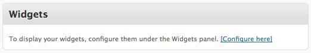
[fig. 2.6 Widgets]
Under Appearance in the dashboard menu, you can customize your widgets by choosing Widgets. There are 4 areas you can drag widgets to where they will show in the theme: Homepage Widgets, Sidebar 1, Sidebar 2 and Footer Widgets.
- Homepage Widgets: these three widgets will show up right below your featured text area
- Sidebar 1 and Sidebar 2: These show up on your home page. Depending on how many columns you choose these will either show up under your blog (one column), to the right of the blog stacked upon each other (two column) or to the right of your blog as columns 2 and 3.
- Footer Widgets: these are the 3 widgets that will show up above your footer.
If you are unfamiliar with using Widgets, you can learn more about it in the WordPress codex, found here: http://codex.wordpress.org/WordPress_Widgets
2.7 Menus & Navigation [ top ]
This theme utilizes a feature first introduced in Wordpress 3.0: Custom Menus. If you are unfamiliar with custom menus, you can learn more at http://codex.wordpress.org/Appearance_Menus_SubPanel
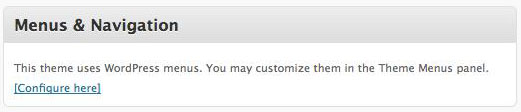
[fig. 2.7 Menus & Navigation]
Your menu shows up in the header of your site. If you choose Configure here under menus, or whether you choose Menus under the Appearance section of your dashboard menu, you will be taken to a page to customize your menu. In order to have your menus displayed, make sure you create your custom menu, and then choose that menu in the Stimulus Main Navigation dropdown in the Theme Locations setting of the Menus page:
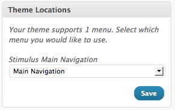
- Stimulus Main Navigation: This shows up below the top navigation
2.8 Creating a "Blog" Page Sep[ top ]arate from the Index Page
Natively, the Green Stimulus offers you two options for displaying your blog posts. You can either choose your posts to show up on your home page, or you can choose to hide that section.
If you do use blog posts, and you would like to have your blog listed in your navigation on a separate page of your website, follow the following steps:
- Create a page on your website named "Blog" or whatever you would like to call it.
- In the menu options for that page, choose "Blog Page" from the dropdown menu under Page Attributes >> Template.
- Add this new page to one of your menus
Your blog posts will now be displayed on the page that you created. You still have the choice to display them on your home page or not.
2.9 Using Featured Images in your Blog Posts
Want to display images in your blog archives? The Green Stimulus theme is designed to display featured images at the top of your excerpts on the blog archives, as well as at the top of the blog posts.
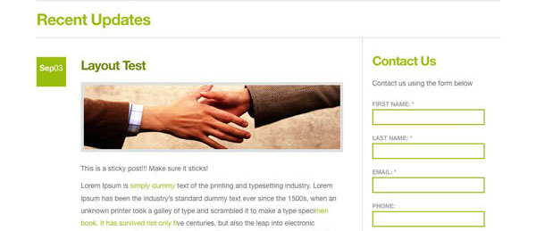
In order to display featured images, you will need to utilize Wordpress's Featured Image feature, housed within the menu on every blog page.
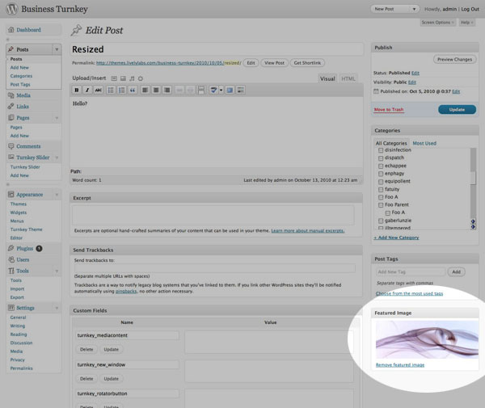
When you use the featured image from within a blog post, it will crop your image to the appropriate size and save additional thumbnail sizes. Whenever you change the number of columns you use, the theme will use the appropriately sized image, so that it always matches the theme design.
If you would also like to use the full-sized version of your image, you may upload it to the content of your blog post.